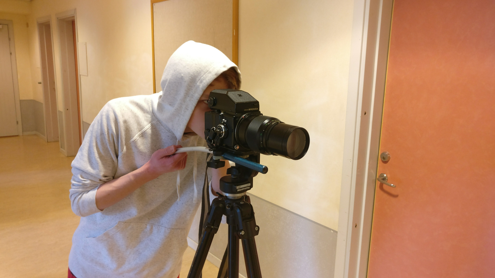

<br>
<text>The Zenza Bronica ETRS is one of the best medium format cameras that I have ever used (not that I've used many).<br>
It features a fast shutter, a bright interchangeable viewfinder+focus screens and a very wide lens selection.</text>
